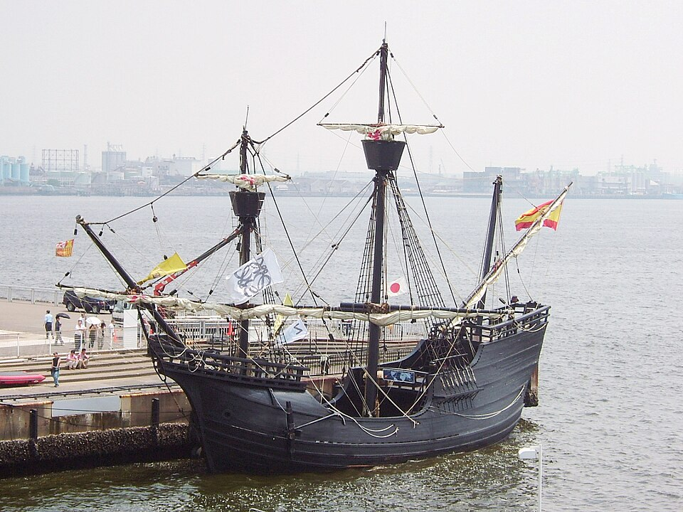
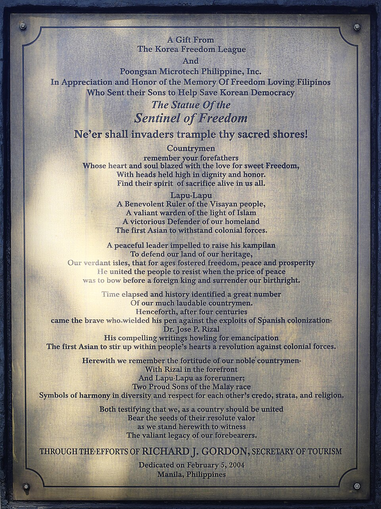

⏱️ 10초 카드 · 대항해시대·세계일주 (1480~1521)
마젤란 해협최초의 세계일주막탄에서 전사
여는 질문 — 끝을 못 본 일도, 그 사람의 성취라고 할 수 있을까?
이름
한국어페르디난드 마젤란
원어Fernão de Magalhães
실제 발음마젤란
로마자Ferdinand Magellan
영어권Ferdinand Magellan
왜 이 사람인가
이 도감에서 마젤란은 '지구가 둥글고 바다가 모두 이어져 있다'는 것을 몸으로 증명한 항해를 설계했어요. 하지만 정작 그는 일주를 완성하지 못하고 필리핀에서 죽었죠. 스페인의 영웅, 필리핀의 침략자, 그리고 '마젤란의 일주'라는 이름에 가려진 진짜 완성자 엘카노까지 — 한 항해에 얽힌 여러 기억을 함께 봐야 하는 인물이에요.
생애
포르투갈 하급 귀족 출신 군인·항해가예요. 조국이 자신의 서쪽 항로 계획을 거절하자 경쟁국 스페인 왕을 설득해 1519년 다섯 척, 약 270명으로 출항했어요. 목표는 서쪽으로 가서 향신료 제도에 닿는 것.
폭풍과 반란을 뚫고 남아메리카 남쪽 끝의 해협(마젤란 해협)을 찾아냈고, 98일간의 굶주림 끝에 태평양을 횡단했어요. '평화로운 바다(태평양)'라는 이름도 그가 붙였죠. 그러나 1521년 필리핀 막탄 섬에서 현지 지도자 라푸라푸와의 전투 중 전사합니다.
남은 선원들을 이끈 엘카노가 1522년 단 한 척, 18명으로 귀환하며 인류 최초의 세계일주가 완성됐어요. 지구는 둥글고 바다는 모두 이어져 있다는 것이 몸으로 증명된 순간 — 다만 필리핀에서는 그의 도착이 333년 식민 지배의 서막으로 기억되고, 그를 물리친 라푸라푸가 영웅으로 기려져요.
자료로 보기 — 유묵·사진



남긴 말
“교회는 땅이 평평하다지만, 나는 (월식 때) 지구의 둥근 그림자를 보았다.”
지구가 둥글다는 믿음을 두고 그가 했다고 전해지는 말 — 기록으로 확인되진 않은 이야기예요. · 출처: 후대에 전해지는 말(전언)
“우리는 가죽과 톱밥을 먹었고, 쥐 한 마리가 진미였다.”
항해를 기록한 피가페타가 태평양 횡단의 굶주림을 적은 증언 — 마젤란 자신의 말이 아니라 동행 기록이에요. · 출처: 안토니오 피가페타 항해기(요지)
연표
- 1480출생 (포르투갈)
- 1519.9세비야 출항 (5척, 약 270명)
- 1520.11마젤란 해협 통과 — 태평양 진입
- 1521.4막탄 전투에서 전사 (라푸라푸 승리)
- 1522.9(사후) 엘카노, 18명으로 일주 완성
생애의 길 — 세비야에서 막탄, 그리고 다시 세비야 🗺️
지구를 한 바퀴 — 그가 시작했지만 끝은 보지 못한 항해예요. 번호를 차례로 눌러 보세요.
현재 지도 위 경로예요. 마지막 화살표가 출발지 세비야로 되돌아온다는 게 핵심 — 지구가 둥글다는 걸 한 바퀴로 증명했죠. 다만 그 귀환을 본 사람은 마젤란이 아니라 엘카노였어요.
빛과 그림자인류의 세계관을 바꾼 항해의 설계자이자, 닿은 땅에서는 무력으로 굴복을 요구한 침입자. 스페인의 영웅, 필리핀의 침략자, 그리고 '마젤란의 일주'라는 이름에 가려진 완성자 엘카노까지 — 한 항해에 얽힌 여러 기억을 함께 봐야 해요.
더 깊이 (고등·일반)
조국에 거절당하고 경쟁국으로
마젤란은 포르투갈의 하급 귀족 출신 군인이자 항해가였어요. 그런데 조국 포르투갈이 그의 '서쪽 항로' 계획을 거절하자, 그는 경쟁국 스페인의 왕을 설득했죠. 1519년, 다섯 척과 약 270명의 선원으로 향신료 제도를 향해 서쪽으로 출항했어요 — 누구도 가 본 적 없는 길로요.
참고: 마젤란 함대 출항 일반
반란과 해협
끝없는 항해에 지친 선원들의 반란, 매서운 폭풍을 뚫고 마젤란은 남아메리카 남쪽 끝에서 대서양과 태평양을 잇는 좁은 물길을 찾아냈어요. 지금은 그의 이름을 따 '마젤란 해협'이라 불리죠. 지도에도 없던 길을 찾아낸, 항해사로서의 진짜 실력이 빛난 순간이에요.
참고: 마젤란 해협 통과 일반
'평화로운 바다' — 98일의 굶주림
해협을 빠져나온 그는 처음 만난 거대한 바다가 잔잔하다며 '태평양(평화로운 바다)'이라 이름 붙였어요. 그러나 그 평화로운 바다는 끝이 보이지 않았죠. 98일 동안 식량이 떨어져 선원들은 가죽·톱밥·쥐까지 먹으며 죽어 갔어요. 바다가 모두 이어져 있다는 걸 증명하는 대가는 너무나 혹독했어요.
참고: 태평양 횡단 일반
막탄, 1521 — 라푸라푸에게 지다
태평양을 건너 필리핀에 닿은 마젤란은, 현지의 한 지도자를 굴복시키려다 막탄 섬에서 라푸라푸가 이끄는 전사들과 싸우게 됐어요. 그리고 그 전투에서 전사했죠(1521). 그가 '발견자'로 기억되는 곳에서, 필리핀 사람들은 그를 물리친 라푸라푸를 외세에 맞선 첫 영웅으로 기려요.
참고: 막탄 전투 일반
엘카노 — 이름에 가려진 완성자
대장을 잃은 함대는 후안 세바스티안 엘카노의 지휘로 항해를 이어, 1522년 단 한 척과 18명만이 스페인으로 돌아왔어요. 인류 최초의 세계일주가 완성된 순간이죠. 그런데 우리는 흔히 '마젤란의 세계일주'라고만 불러요 — 정작 끝까지 살아 돌아와 일주를 완성한 사람은 엘카노였는데도요. 역사가 누구의 이름을 기억하는지, 한번 생각해 볼 일이에요.
참고: 엘카노의 귀환(1522) 일반
사람의 그물 — 함께 읽을 인물
이 인물이 나오는 이야기
더 공부하기 — 여기서 출발하세요
📚 책으로
- 마젤란 — 최초의 세계일주 ↗ · 로런스 버그린폭풍·반란·굶주림까지, 항해의 전 과정을 생생하게.
📜 1차 사료
- 피가페타 항해기 ↗마젤란과 끝까지 함께한 사람이 남긴, 세계일주의 유일한 상세 기록.
🎬 영상으로
- Simple History 〈마젤란 — 최초의 세계일주〉 ↗🟢 마젤란-엘카노 항해를 애니메이션으로 따라가는 교육 영상(영어/자막).
📍 가 볼 곳
- 마젤란 해협 (칠레) ↗그가 찾아낸, 대서양과 태평양을 잇는 남미 남단의 물길.
- 막탄 섬 (필리핀 세부)마젤란이 전사하고 라푸라푸가 승리한 곳 — 라푸라푸 기념비가 있어요.